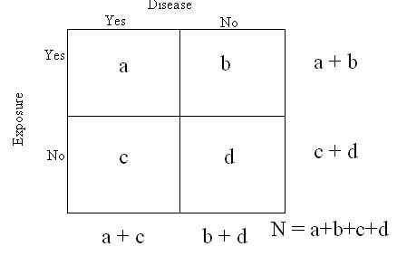

Study Analysis: 2 x 2 Table or Chi-square Test
Lead Author(s): Jeff Martin, MD
Measuring Association
The simplest way to measure the association is to have a dichotomous outcome and dichotomous exposure variable as can be seen in the table below.
- The proportions with and without disease are compared among those with and without the exposure.
2x2 Table

This is a conventional schematic of a what is called in epidemiology a 2 x 2 table. This table is used to illustrate basic measures of association.
Additional Exposures
- Of course, exposures might have more than two levels and thus more than just yes/no categories, but the same principles would apply to the measures of association.
Table Layout
This 2 x 2 schematic is widely used, but exposure and disease can switch position as can the yes and no columns and rows.
- It is important to notice how the table you are looking at has been arranged.
Margins
At the beginning of a cohort study or randomized trial, we know who is exposed or treated (a + b) and who is not exposed or not treated (c +d).
These are referred as the margins of the 2x2 table.